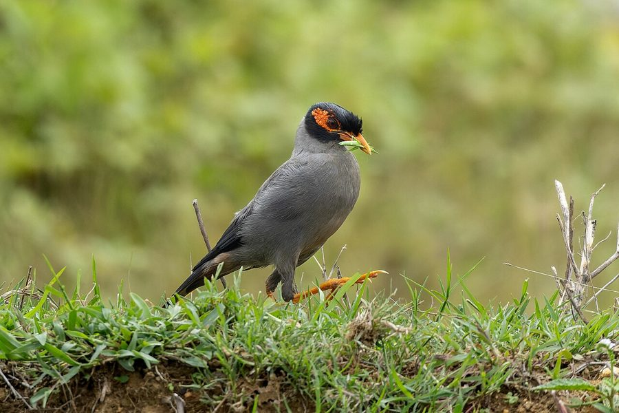

गंगा मैनाBank Myna
Acridotheres ginginianus · Sturnidae · BRD-0085

- Scientific nameवैज्ञानिक नाम
- Acridotheres ginginianus (Latham, 1790)
- Familyकुल
- Sturnidae
- Hindiहिंदी
- गंगा मैना / नदी मैना
- Local namesस्थानीय नाम
- ganga maina, ganga myna, nadi maina, daria maina
- Status hereयहाँ की स्थिति
- native
- Movementआवागमन
- Resident, here all year
- IUCNIUCN
- LC
- Reviewसमीक्षा
- audited and independently read
When to look कब देखें
Present all year.साल भर मौजूद।
Uses and possibilities उपयोग और संभावनाएँ
Drawn from the documented uses in the profile below, where each is labelled traditional, current or a research lead. All uses →
Tell it apart from इनसे अलग पहचानें
गंगा मैना / Bank Myna
Acridotheres ginginianus (Latham, 1790) — Sturnidae
गंगा मैना — नदी के किनारे रेतीली चट्टानों में घोंसले बनाने वाली एक मैना जो सामान्य मैना से अलग दिखती है। इसकी नारंगी चमड़ी, काली कान की जेब, और अधिक समूह में रहने की आदत इसे अलग करती है। पर यह भी कीटों को खाती है और गाँव के पास नदी के किनारे रहती है।
Quick Identification त्वरित पहचान
| Feature | Description | |
|---|---|---|
| Size | Small starling (21–24 cm total length); slenderer than [[common_myna\ | Common Myna]] |
| Plumage | Pale grey-brown body; paler underparts | |
| Facial skin | Distinctive orange-red bare skin patch (not yellow) around and behind eye | |
| Ear patch | Black ear covert patch (diagnostic) | |
| Wings and tail | Darker than body; white wing patches less extensive than Common Myna | |
| Bill and legs | Yellow bill; yellow legs (like Common Myna) | |
| In flight | White wing patches visible but smaller; more slender silhouette |
Field tip: Smaller than Common Myna with orange-red (not yellow) facial skin, a black ear patch, and a slenderer build. Look for it in flocks near river banks or sandy cliffs. The orange face is diagnostic once you see it.
Morphology आकारिकी
Biometrics (nominate subspecies ginginianus, northern India — the form in eastern UP):
| Measurement | Range |
|---|---|
| Total length | 210–240 mm |
| Wing (flattened chord) | 115–125 mm |
| Tail | 70–80 mm |
| Tarsus | 32–38 mm |
| Bill (culmen from base) | 22–26 mm |
| Weight | 85–105 g |
Plumage: Head, neck and upperparts pale greyish-brown. Underparts paler, almost whitish on belly and vent. Primaries and tail darker. Wing patch white but smaller and less conspicuous than Common Myna (involves 4–5 primary bases).
Face: Bare orange-red wattle around eye extending from lore to behind the ear. Ear coverts with a distinctive black patch — unique to this species. This black patch is the field mark that separates it instantly from Common Myna and Jungle Myna.
Legs and feet: Yellow.
Sexes: Similar; difficult to distinguish in field.
Juveniles: Duller overall; facial bare parts pale orange-yellow; ear patch brown rather than black.
Vocalisations
Bank Myna is less vocal than Common Myna, with a lower-pitched, more melodic repertoire.
- Contact and gathering call: A softer, more liquid "chip-chip" or "chupp-chupp", especially at dusk when flocks assemble at roosts.
- Alarm call: A harsh chur, less strident than Common Myna.
- Song: A rambling, warbling series of liquid notes from a perch, often at dawn.
- Roost call: Evening chattering as hundreds congregate.
Behaviour & Ecology व्यवहार और पारिस्थितिकी
Colonial nester: Unlike Common Myna which nests singly in scattered cavities, Bank Mynas are highly colonial. They excavate burrow nests in soft sandy cliffs or banks, often in colonies of dozens or hundreds. Nest entrances are visibly clustered.
Ground foraging: Forages in tight flocks on the ground, picking up insects and seeds. Follows grazing cattle like Common Myna.
River association: More strongly tied to river systems and water than Common Myna. However, increasingly found in villages and agricultural areas away from rivers.
Flock size: Usually in larger flocks (20–100+) than Common Myna; communal roosting on buildings, trees near water, or on cliffs.
Life Cycle / Phenology जीवन चक्र
- February–March: Colony site selection and burrow excavation begin
- March–May: Peak egg-laying; clutches of 4–5 pale blue-green eggs
- April–June: Incubation (females) and chick-feeding by both parents
- June–July: Fledglings leave nests; families still forage together
- August–October: Post-breeding; some flocks larger as families coalesce
- November–February: Winter; communal roosting, less activity
Host Plants or Prey आहार
Primary diet:
- Insects: grasshoppers, crickets, beetles, armyworms, termites (especially winged forms)
- Seeds of grasses and weeds
- Grains from fields (minor)
- Fruits: occasionally berries and soft fruits (mango, guava)
- Earthworms
Predators / Natural Enemies शत्रु
- Shikra (Accipiter badius) — primary aerial predator
- Black Kite (Milvus migrans) — preys on young birds and raids nests
- Indian Fox (Vulpes bengalensis) — attacks ground-roosting flocks at night
- Feral cats and mongooses — hunt birds in villages and near nesting sites
- Snakes — raid nests in banks
Agricultural / Human Relevance कृषि प्रासंगिकता
Pest control: Consumes large quantities of grasshoppers, crickets and other invertebrate pests. Follows ploughing operations to feed on exposed soil insects. Overall beneficial to agriculture.
Nesting implications: Burrowing in river banks can cause minor soil erosion in some areas. However, the birds remain dependent on good river habitat, and erosion is minimal compared to water flow and human extraction.
Cultural role: Less prominent in Hindi literature and culture than Common Myna, but appreciated locally for its softer calls and smaller flocks. Historically mentioned in natural history accounts of northern India.
Protected status: All mynas are protected under Wildlife (Protection) Act, 1972 (Schedule IV). Nest disturbance is illegal.
Expected Locally स्थानीय रूप से अपेक्षित
Not a field record. Written from published accounts for eastern Uttar Pradesh. No confirmed local sighting yet — if you have seen it, that is what the atlas needs.
अभी तक स्थानीय पुष्टि नहीं। यह विवरण प्रकाशित स्रोतों से है, किसी अवलोकन से नहीं।
Bank Myna should be found in Basti and Ayodhya districts wherever rivers and streams provide suitable sandy banks or cliffs for burrow-nesting. Likely along the Ghaghra, Rapti, and other tributaries. Also found increasingly in villages adjacent to these rivers. Look for flocks of sleek, pale brown starlings with orange faces and black ear patches foraging on the ground near water.
Distribution वितरण
Global range: Primarily South Asia — widespread across northern and central India, extending into Pakistan, Nepal and Bangladesh; more localized in peninsular India.
In India: Common resident across northern India; widely distributed in central India; less common in the southern Deccan and South India.
In Uttar Pradesh: Widely distributed in areas near rivers and streams; increasingly moving into villages away from water.
In Basti district / eastern UP: Expected along the Ghaghra and Rapti river valleys and their tributaries; also found in agricultural areas and villages near these water systems.
Research Questions शोध प्रश्न
- Is Bank Myna still nesting in river banks near your village? / आपके गाँव की नदी में गंगा मैना घोंसले बनाती है? — Look for burrow colonies in sandy banks, especially from February to May.
- How many Bank Mynas roost together at night? / रात को कितनी गंगा मैनाएँ साथ सोती हैं? — Count birds returning to a roost site at dusk (need to find the roost first).
- What insects do Bank Mynas eat in different seasons? / अलग-अलग मौसम में क्या कीड़े खाती हैं? — Watch feeding flocks and note what they pick up; collect droppings to examine.
- Do Bank Mynas and Common Mynas compete for food? / दोनों मैनाएँ एक साथ खाती हैं या अलग-अलग? — Watch fields where both species are present; note feeding distance and competition.
- How have river banks changed since your parents' time? / नदी के किनारे कैसे बदल गए हैं? — No equipment needed — ask elders about myna colonies they remember.
Similar Species मिलती-जुलती प्रजातियाँ
| Species | How to tell apart | हिंदी | |
|---|---|---|---|
| Common Myna (Acridotheres tristis) | Larger; yellow facial skin (not orange); no black ear patch; white wing patch larger; heavier build | साधारण मैना — पीली चमड़ी, भारी | |
| Jungle Myna (Acridotheres fuscus) | Similar size; grey facial skin (not orange); has tuft of feathers at bill base; less common in villages | जंगल मैना — भूरी चमड़ी | |
| [[brahminy_starling\ | Brahminy Starling]] (Sturnia pagodarum) | Orange underparts; rusty-brown; slimmer; grey-white head; different call | पहाड़ी मैना |
Field rule: Smaller than Common Myna + orange-red (not yellow) facial skin + black ear patch + more gracile build + found in flocks near water = Bank Myna. The orange face and ear patch are diagnostic at a glance.
Taxonomy & Classification वर्गीकरण
Original description. Acridotheres ginginianus was described by John Latham in 1790 (Paradisea ginginiana), based on specimens from the Ganges valley. Type locality: Ganges River region, northern India.
Subspecies. Two subspecies are recognised:
| Subspecies | Authority | Range |
|---|---|---|
| A. g. ginginianus | (Latham, 1790) | Northern India, Ganges valley — UP subspecies |
| A. g. terricolor | Hodgson, 1837 | Nepal |
Family and order placement. Order Passeriformes; family Sturnidae. The genus Acridotheres contains ~10 species; Bank Myna is the smallest.
Phylogenetic notes. Molecular studies confirm Acridotheres as a monophyletic genus, with ginginianus close to javanicus (javan Myna).
IUCN status rationale. Assessed as Least Concern. The species is widespread and populations stable, though local declines occur where rivers are heavily exploited or modified.
Photo Gallery फोटो गैलरी
Note: Add field photos tomedia/species/bank_myna/
फोटो निर्देश: पास से (नारंगी चमड़ी और काली कान की जेब दिखाते हुए), समूह में खाते हुए, और रेतीली नदी के किनारे घोंसले के छेद पर।
Photos needed आवश्यक फोटो
- [ ] Close-up showing orange facial skin and black ear patch (नारंगी चमड़ी + काली जेब)
- [ ] Flock feeding on ground (समूह में खाते हुए)
- [ ] Burrow colony in sandy bank (रेत के किनारे घोंसले)
- [ ] In flight showing smaller white wing patch (उड़ते समय सफेद पंख)
- [ ] At river bank or water's edge (पानी के किनारे)
References संदर्भ
- Latham, J. (1790). Index Ornithologicus. London, p. 398. [original description]
- Ali, S. & Ripley, S.D. (1987). Handbook of the Birds of India and Pakistan. Vol. 5. Oxford University Press, New Delhi.
- Grimmett, R., Inskipp, C. & Inskipp, T. (2011). Birds of the Indian Subcontinent. 2nd ed. Christopher Helm, London.
- Rasmussen, P.C. & Anderton, J.C. (2005). Birds of South Asia: The Ripley Guide. Smithsonian Institution, Washington.
- Feare, C. & Craig, A. (1998). Starlings and Mynas. Christopher Helm, London.
- BirdLife International (2024). Acridotheres ginginianus. IUCN Red List of Threatened Species. Ver. 2024.
- GBIF Occurrence Data — Acridotheres ginginianus, Uttar Pradesh (2010–2025).
Source file: species/fauna/birds/bank_myna.md